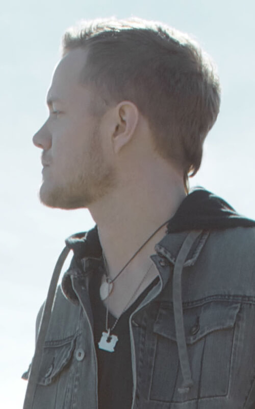
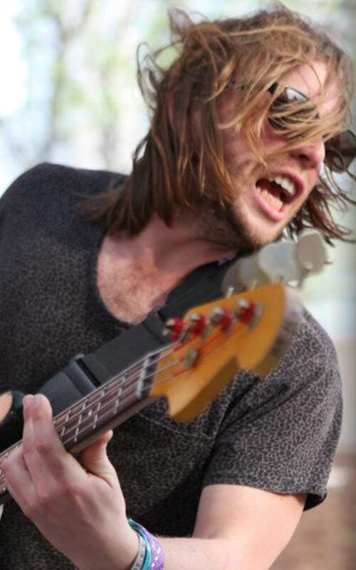
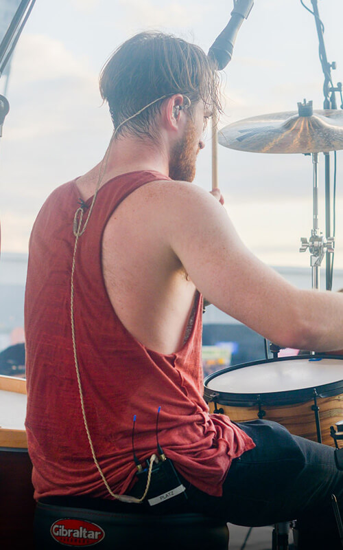

Integrantes

Dan Reynolds

Ben Mckee

Wayne Sermon

A banda Imagine Dragons está na estrada desde 2008 tocando um indie rock. Tudo começou quando Dan Reynolds conheceu o ex-integrante Andrew Tolman em Las Vegas, nos Estados Unidos.
Após se conhecerem na universidade, os músicos decidiram, no mesmo ano, lançar um EP que levava o nome do grupo. Hell and Silence EP, chegou às lojas em 2010, ambos foram gravados na Battle Born Studios. Em 2011, lançaram o EP It's Time, e logo depois assinaram um contrato de gravação com a Interscope Records.
O nome da banda é um anagrama, segundo explica o guitarrista Wayne Sermon: “Nós tínhamos essa frase, mas não queríamos chamar a banda assim, então concordamos em mudar as letras de lugar e surgiu Imagine Dragons. Nós não dissemos sequer a nossas mães o que era a frase. Como artista você coloca tanto de si mesmo para fora, que é divertido ter alguma que você mantenha em segredo”.
A primeira grande aparição aconteceu quando o vocalista da banda Train adoeceu pouco antes do Bite of Las Vegas Festival de 2010 e então o Imagine Dragons foi convidado para preencher o lineup, se apresentando para uma multidão de mais de 26.000 pessoas.
O primeiro disco de estúdio da banda, nomeado Night Visions, chegou em setembro de 2012. O álbum alcançou a segunda posição na Billboard 200, com vendas na primeira semana de mais de 83.000 de cópias. Fora isso, também atingiu a primeira posição na Billboard Alternative e Rock Album, e ficou entre as dez melhores posições nas paradas austríacas, canadenses, alemãs, entre outras.
Na época, a Billboard listou a banda como uma das "Novas estrelas mais brilhantes de 2012". O grupo saiu em turnê por diversos países, finalizando em 2014 com um show durante o Lollapalooza no Brasil.
Foi durante essa série de shows que canções para um segundo álbum começaram a ser escritas. Em outubro de 2014 foi revelado o primeiro single do novo disco, a canção "I Bet My Life". Em seguida, o disco Smoke and Mirrors foi lançado nos nos Estados Unidos no dia 17 de fevereiro de 2015, chegando ao topo das paradas dos mais vendidos por lá e também no Reino Unido.
Em de fevereiro de 2017, a banda lançou "Believer" como o primeiro single de seu terceiro álbum. "Believer" foi usado como parte do anúncio do Super Bowl para o Nintendo Switch. Seguindo a divulgação de um novo material, em abril o Imagine Dragons lançou "Thunder" como o segundo single de seu terceiro álbum.
Envolve, chegou foi anunciado em maio, juntamente a uma nova faixa, "Whatever It Takes", lançada no mesmo dia. O álbum alcançou o top cinco na maioria dos países, mas recebeu críticas mistas dos críticos.
Imagine Dragons é uma banda diferente das demais, além de compor excelentes músicas, a banda é muito ativista e defende diversas causas lindas de se ver, recebendo até premios por conta disso, um se destaca, o prêmio pelo ativismo em favor da causa LGBT.
"Quando as pessoas diziam ‘ei, eu sou gay’, eu achava que era pecado. Gostaria poder bater na porta delas de novo e dizer que eu estava errado. Não posso fazer isso. Tudo que posso fazer é chegar aqui hoje e dizer a vocês que, sinceramente, sinto muito. De coração."
"O prêmio significou para mim mais do que qualquer outro que já recebi na indústria do música ou em qualquer outro setor da minha vida"
Como ficou aparente a principal causa é a LGBT, mas eles também lutam contra a intolerancia religiosa, o abuso político de certos países e atuam em muitas instituições de caridade como por exemplo a Tyler Robinson Foundation, que foi criada pelos mesmos.
As músicas da banda fazem muito sucesso, principalmente com o público adolescente. E justamente essa ligação com o público adolescente fez a história da banda se cruzar com a do garoto Tyler Robinson. Ele foi diagnosticado com rabdomiossarcoma, um tipo raro de câncer. Tyler sempre ia aos shows da banda e segundo as palavras do guitarrista Wayne: “Nós estávamos tocando em um pequeno clube quando conhecemos Tyler. Ele era mais um fã da banda, mas depois do show, descobrimos que ele estava lutando contra o câncer. Nós nos reunimos com ele e instantaneamente ficamos cativados por sua personalidade marcante”.
Tyler Robinson escreveu uma carta emocionante contando a sua história. Ele ficou conhecido por sua coragem na luta contra o câncer e sua felicidade contagiante. Apesar de todos os esforços Tyler faleceu em março de 2013. Mas a sua história não terminou com a sua morte.
Quando souberam da morte de Tyler, a banda estava trabalhando na produção do novo clipe "Demons", e resolveram dedicar a canção para o fã. Algumas histórias pessoais são contadas durante o clipe, justamente como Tyler, que vivia cada momento intensamente, independente das dificuldades. A banda incluiu no clipe um pedaço de um show de 2011 onde é feita uma homenagem ao garoto. Dan e Tyler cantam a música “It’s time”, canção favorita de Tyler. O vídeo já conta com mais de 86 milhões de visualizações.
Juntamente com a família de Tyler a banda criou a fundação TRF que se dedica a prestar assistência financeira às famílias de crianças com câncer. As pesquisas recentes têm encontrado tratamentos promissores, o que aumentaria a chance de cura das pessoas com câncer, entretanto muitas famílias não podem arcar com os custos financeiros dos tratamentos adequados. A Fundação Tyler Robinson arrecada dinheiro para sustentar essas famílias e alivia a experiência desesperadora de muitos pais devido aos problemas financeiros, permitindo-lhes concentrar o seu tempo e energia onde ela é mais necessária, ou seja, seus filhos.